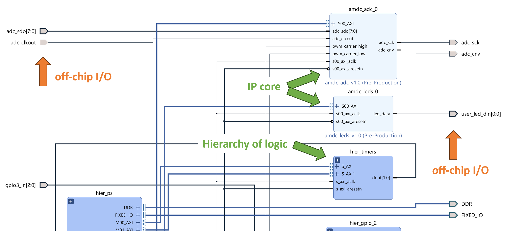
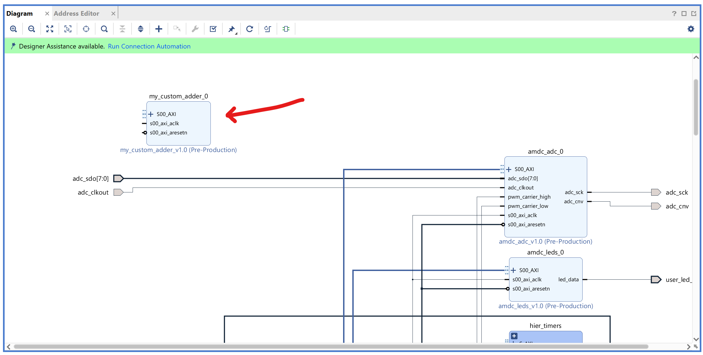
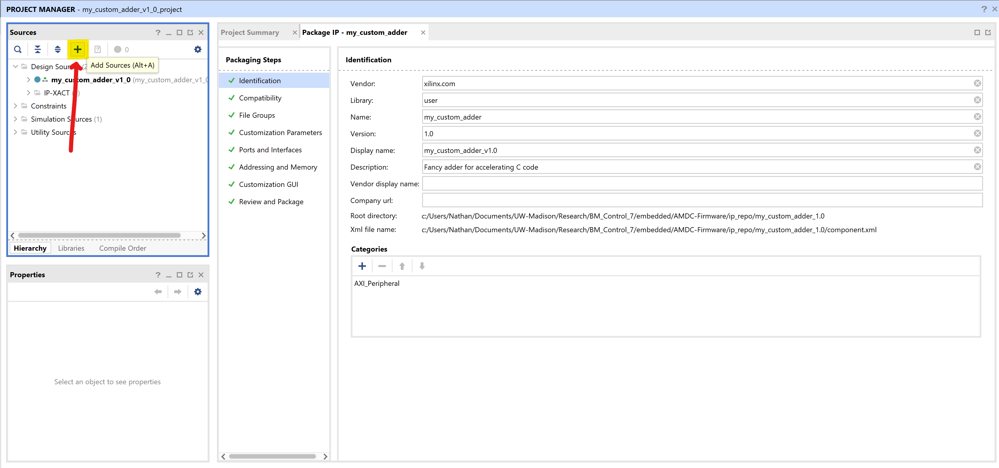

Tutorial: Custom FPGA IP Core¶
Goal: Run custom Verilog code in the FPGA.
Complexity: 5 / 5
Estimated Time: 90 min
This tutorial goes over the procedure to create and add a custom FPGA IP core in Vivado. Step by step instructions are given which walk the user through each part.
This tutorial goes over a toy C code accelerator application of IP cores.
For a real-life example tutorial of IP cores used to drive external hardware devices, check out this blog post which explains how the firmware drivers for the RGB LEDs are implemented in the AMDC.
Tutorial Requirements¶
Working AMDC hardware for testing
Completion of the VSI tutorial
Review of the
v1.0firmware system architecture documentationWorking knowledge of digital logic and Verilog
Working knowledge of programming and embedded C code
Background¶
The AMDC processor is the Xilinx Zynq-7000 system-on-chip (SoC)—see its 1800 page Technical Reference Manual. It includes a dual-core digital signal processor (DSP) and tightly coupled FPGA.
Note
In the official Xilinx documentation, the DSP part of the Zynq-7000 is referred to as the “Processing System” (PS), and the FPGA is called the “Programmable Logic” (PL). These names can be used interchangeably.
Xilinx provides extensive documentation for exactly the aim of this tutorial: FPGA IP cores. Seriously, there are over 20 PDFs/videos/resources provided specifically for this from Xilinx, see here. The main Xilinx resources are this tutorial and this user guide. Unfortunately, these two PDFs alone are a combined 178 pages long, which can make it hard/overwhelming for new users.
The goal of this tutorial is to walk advanced AMDC users—who care about using the FPGA—through the process of creating a basic IP core. The tutorial does not try to help the user understand every single piece of the system. If you want to truly understand FPGA design for the Xilinx Zynq-7000 architecture, you need to invest the hours to read the official documentation.
Keep in mind that this tutorial is applicable to any system built on top of Xilinx’s system-on-chip (DSP + FPGA) architecture family, not just the AMDC + PicoZed + Zynq-7000 combination.
Motivation¶
After completing this tutorial, answers to the following questions should become apparent:
How do I run my custom Verilog code in the FPGA?
How does the C code interact with Verilog code?
Can the FPGA be used for hardware acceleration of C code?
I need to implement a new hardware I/O driver to interface to a new sensor/accessory for the AMDC…how do I add it to the FPGA?
Verilog is structured in files which contain module definitions.
Each module has external inputs and outputs and can implement internal combinational and sequential logic.
Modules can be instantiated inside other modules to build a hierarchy of “blocks”.
Typically, external (i.e., off-chip) signals propagate up to and come from the top-level module.
Consider the following Verilog module which implements an add operation of two registers, but with a constant offset and scaling of inputs.
The math expression is: \(y = 8 x_1 + x_2/4 - 10203\).
It returns the result back to the caller block.
// my_custom_adder.v
module my_custom_adder(clk, rst_n, in1, in2, out);
input clk, rst_n;
// User-supplied arguments
input wire [31:0] in1;
input wire [31:0] in2;
// Computed summation
output reg [31:0] out;
always @(posedge clk, negedge rst_n) begin
if (!rst_n)
out <= 32'b0;
else
out <= (in1 << 3) + (in2 >> 2) - 32'd10203;
end
endmodule
We want to be able to use this module from the processor C code.
How do we inject values from the C code into the inputs in1 and in2?
How do we access the output register out?
In C code, we want to compare the performance of our Verilog-based FPGA adder “accelerator” block versus the C-code-based processor adder.
int main() {
uint32_t in1 = 1234567;
uint32_t in2 = 2345678;
uint32_t out;
// C code version
out = 8*in1 + in2/4 - 10203;
// FPGA version
out = somehow_access_my_custom_adder(in1, in2);
}
The key question is: how do we implement the somehow_access_my_custom_adder() function above?
This is the role of the FPGA IP core.
FPGA IP Cores¶
An IP (intellectual property) core, see Wikipedia article, is a way to modularize and encapsulate digital logic for use in digital hardware. This applies more broadly than just the Xilinx Zynq-7000 architecture—IP cores are an industry-wide concept and any digital system can use IP cores, for example, digital logic design engineers for FPGAs and ASICs can use IP cores as reusable building blocks. Each IP core encapsulates a single “job” to be done in the digital logic. For example, an Ethernet MAC, HDMI interface, FFT calculation engine, video transcoder, digital communication protocol (e.g., SPI/CAN/UART/USB/etc), neural network inference accelerator, etc.
The term “IP” refers to the custom logic and “smarts” that are contained within the digital logic. Users of the logic block do not have to understand the “IP” baked within to use the module, simply the block interface and I/O requirements.
Hard vs. Soft IP¶
Due to the heterogeneous architecture of the Zynq-7000, the notion of “soft” and “hard” IP becomes relevant. The Zynq-7000 SoC includes hard IP, akin to standard DSPs from, e.g., TI, ST, NXP, etc. Think of hard IP as digital logic that is etched into the silicon—it cannot be altered or changed. Typically, hard IP runs faster than soft IP since there is less extraneous support circuitry to allow for customization at run-time. Examples of typical hard IP include CPU cores (e.g., ARM Cortex-M0) and peripherals like UART/SPI/I2C/USB/etc.
Soft IP is logic that is dynamically configurable, i.e., FPGA logic. For example, a soft processor is a processor that is implemented in the FPGA. It still runs code and acts like a hard processor, but tends to be slower, albeit, infinitely configurable. Xilinx provides its MicroBlaze Soft Processor Core IP which makes it easy to create additional processors (e.g., DSPs) in the FPGA. ARM provides the Cortex-M1 designed specifically for FPGAs. These can be instantiated many times to create a custom parallel architecture in the FPGA. Note that these soft processors run slower than the hard ARM cores in the Zynq-7000 SoC—around 3-10x slower clock frequencies.
How do the IP cores in this tutorial and the AMDC-Firmware relate to soft/hard logic? By definition, all IP cores in the FPGA that have custom Verilog are soft IPs—the FPGA was dynamically configured at run-time to implement the desired logic functions. However, under the hood, if an IP core uses the “hard” logic in the FPGA (e.g., DSP slices, high-speed dedicated transceiver circuitry, etc), then the full IP core would be composed of both soft and hard IP, but overall, still be considered a soft IP.
Note that soft IP provided by third-parties (e.g., Xilinx and others, see below) is generally not editable—the source code is often locked and must be implemented as a “black-box”.
Commercial IP usually has strict licensing agreements which must be followed.
All AMDC-Firmware IP cores (named as amdc_***) are open-source and editable by anyone.
Example IP Cores for Sale¶
Designers can purchase pre-made IP cores from many companies. For example, the three major FPGA providers (AMD/Xilinx, Intel/Altera, and Lattice) all sell IP cores to accelerate development using their products.
A few examples you can buy/license:
FFT IP core from Intel/Altera costs over $7k
CAN IP core from AMD/Xilinx costs $18k
USB 2.0 IP core from AMD/Xilinx costs $14k
2D video frame scaling IP core from Lattice costs $3.5k
IP Cores, Inc IP core product offering
ZIPcores IP core products, e.g.,
FIR filters costs $4k
Floating point square root costs $4k
I2C master controller costs $3k
As seen above, commercially available IP cores are relatively expensive for casual users, but can greatly accelerate the time to solution and reduce development risk. If you possess the skills to create custom Verilog code which can implement the desired functionality, designing and building your own IP cores can be a rewarding alternative compared to buying commercial solutions.
IP Cores in Xilinx Vivado¶
In the AMDC-Firmware, Vivado manages the FPGA design using three entities:
The “block design”
.bdfile—encodes the different elements, configurations, and connectionsThe constraints file
.xdc—stores hardware-related information like port/pin mappingsIP repo—folder of custom IP cores which integrate into the block design
These files are visible directly in the AMDC-Firmware repository:
Block design: /hw/amdc_reve.bd
Constraints: /hw/constraints_amdc_reve.xdc
IP repo: /ip_repo/
Block Design File¶
The block design .bd file is the top-level visual representation of the FPGA design.
Below is an example screenshot which shows off-chip inputs and outputs (I/O), IP cores (light blue), and hierarchy containers (dark blue) which are simply a way of making the block design appear cleaner.

Vivado can also support plain HDL module blocks in the block design (i.e., not IP cores, just an instantiated Verilog file), but the AMDC-Firmware project does not use this approach. Plain modules are “static” meaning their I/O cannot be dynamically updated from the C code. Therefore, their functionality is rather limited.
Notice that each IP core has three common inputs:
s00_axi_aclk—clock input, runs at 200 MHz (often calledclkin Verilog files)s00_axi_aresetn—asynchronous reset input, active low (often calledrst_nin Verilog files)S00_AXI—bus of many signals which form the AXI4 interconnect
AXI Interconnect¶
The AXI interconnect is the bus that connects the DSP (processor) and the IP cores in the FPGA (the programmable logic). AXI is part of ARM AMBA, a family of microcontroller buses first introduced in 1996. AMBA 4.0, released in 2010, includes the second version of AXI, AXI4. Xilinx has adopted the Advanced eXtensible Interface (AXI) protocol for Intellectual Property (IP) cores.
There are three types of AXI4 interfaces:
AXI4—for high-performance memory-mapped requirements
AXI4-Stream—for high-speed streaming data.
AXI4-Lite—for simple, low-throughput memory-mapped communication (e.g., to and from control and status registers)
The AXI interconnect is the method by which the C code driver is able to read, write, and interact with the IP cores in the FPGA. Most IP cores in the AMDC-Firmware use AXI4-Lite since it implements a simple register interface for low-throughput data transfer. The remainder of this tutorial will walk through creating and testing a basic IP core using AXI4-Lite.
IP Core Inputs and Outputs¶
There are two types of input and output to/from an IP core: signal I/O and DSP-FPGA register I/O.
Signal I/O¶
Vivado shows the signal inputs to an IP core on the left of the block and the IP core outputs on its right.
Think of these inputs and outputs as the I/O which goes to/comes from a Verilog module.
For example, notice that the amdc_leds IP core in the screenshot above has one output signal: led_data.
This signal is wired directly to a port user_led_din which goes “off-chip”.
This signal eventually appears at the actual LEDs on the AMDC hardware, and can be measured by a logic analyzer or oscilloscope.
Similarly, the amdc_adc IP core has both inputs and outputs that go off-chip since it drives the external ADC via a SPI interface (cnv, sclk, sdo[7:0]).
However, the amdc_adc IP core also has inputs which come from other FPGA IP cores (i.e., not off-chip)—the pwm_carrier_high and pwm_carrier_low signals are generated by another IP core. This concept of inputs and outputs matches that of normal HDL modules.
DSP-FPGA Register I/O¶
Since IP cores have registers which can be read/written from the DSP C code, there is another notion of input and output, this time at a register level.
Setting an IP core register from the C code feels like another input to the IP core, however, this is not visible from the block design view.
All DSP-FPGA interactions and registers are contained within the IP core—the only indication of DSP-FPGA interaction is the S00_AXI bus going to the IP core left side.
Creating AXI4-Lite IP Core in Vivado¶
This section goes over all the required steps to create and add the my_custom_adder module IP core and hook it up in the block design.
It is assumed the reader has already installed the Xilinx Vivado software per these instructions, as well as built the Vivado project per the first part of these instructions.
If not, go back and complete the steps now.
Caution
The instructions below attempt to show and explain all the steps. However, Vivado has many quirks so users might find things not working for them.
If so, please reach out for help via the AMDC-Firmware GitHub Discussions page.
Per the feedback, we will try to update this tutorial to make these steps as fool-proof as possible.
Vivado works well and does the right things, but requires careful user inputs to get it to do what is desired. It is quirky.
1. IP Creation Wizard¶
Vivado comes with an IP creation wizard that automatically writes all the required Verilog for a base IP core. To use this, follow these instructions:
Open Vivado, load the
amdcproject, and open the block designStart the IP wizard:
Tools>Create and Package New IPRead the window and click
Next >Select
Create a new AXI4 peripheraland clickNext >
Peripheral Details¶
Update the name to be
my_custom_adder(note: all AMDC-Firmware IP uses theamdc_***namespace, but for this tutorial, no need for that)Update the
Descriptionbox to a short (5-10 word) description of the new IP coreEnsure the
IP locationis the/ip_repo/folder of theAMDC-Firmwarerepo installationReview the screenshot below as an example
Click
Next >
{kind=link}
Add Interfaces¶
Keep the AXI interface
Nameas default:S00_AXISet
Interface TypetoLiteSet
Interface ModetoSlaveSet
Data Width (Bits)to32Set
Number of Registersto4Review the screenshot below as an example
Click
Next >
{kind=link}
Create Peripheral¶
Read the dialog and ensure the
Next StepsisAdd IP to repositoryClick
Finish
The wizard will close and a new loading pop-up will appear. After a few seconds, it will finish and the block design will appear again.
Look around. Nothing has changed! So where did the new IP core go?
Check in git: the new IP core indeed was created and all its contents are located at /ip_repo/my_custom_adder_1.0/.
2. Adding IP to Block Design¶
Once you create the IP core as above, it does not automatically appear in the block design. The following steps are required to instantiate it and “hook it up” so it can be used.
Instantiate IP Core¶
From the block design, click the
+button and search by name for the IP core:my_custom_adderDouble click the name of the IP core and it will be added to the block design
{kind=link}
The new IP core will be somewhere in the block design. Scroll around until you find it. For example, when creating this tutorial, it was added like this:

If desired, the IP core can be dragged around to a new location.
Or, Vivado can automatically redraw the block design based on how it thinks the “best” arrangement would be by clicking the Regenerate Layout button from the Diagram pane toolbar (the forward circular arrow, 3rd from right in the above image).
Hook Up IP Core¶
Notice that the new IP core has only three inputs, like discussed earlier. However, by default, these are not connected to anything. To hook them up, do the following:
Attach the clock
s00_axi_aclkto the common clock that all other IPs use by clicking on the pin and dragging the mouse to the common clock signalAttach the reset
s00_axi_aresetnto the common reset signal like above
Once clock and reset are connected, it should look like this.
Here, the signals are highlighted to easily see where they go—do this by Ctrl-clicking on the nets.
{kind=link}
Finally, the IP core AXI interface needs to be hooked up.
Do this by clicking on the Run Connection Automation from the green Designer Assistance bar.
A pop-up appears.
By default, it should have selected the unconnected AXI interface to the new IP core.
There should be no settings to change here.
Simply click OK.
{kind=link}
Congrats! The IP core is now properly instantiated and hooked up.
3. IP Core Base Address¶
As will become apparent later, the “base address” of the IP core is very important.
The base address of the IP core is assigned in Vivado from the Address Editor pane.
By default, it gets the next available IP core address:
{kind=link}
Here, the address was assigned as: 0x43DB0000.
We will use this value later.
4. Summary of “Empty” IP Core¶
Let’s take a moment to understand the current state of the FPGA and our new IP core.
We created an IP core that uses AXI4-Lite for external communication. It has 4 internal registers which are accessible from the C code via memory-mapped operations. The IP core has no custom functionality since it is only composed of the template code from the IP Wizard.
Think of the blank IP core as exposing 4 additional read/write (R/W) variables to the C code that are not standard RAM—these new “variables” are actually 32-bit wide registers in the FPGA. We will unpack what this means in the remainder of the tutorial.
5. Editing IP Cores¶
The “empty” IP core which comes from the IP wizard is not very useful. Unfortunately, it is rather difficult to edit the IP core to add custom features. The following steps must be followed in order to edit the contents of the IP core.
Note
The next sections in this tutorial will give concrete examples of these steps and provide screenshots as we add the my_custom_adder module.
This section is meant to be a reference guide for future projects.
In the block design, right-click on the instantiated IP core and select
Edit in IP PackagerIn the pop-up, leave the defaults and click
OKIt will load and then open a new instance of Vivado where the top-level is the IP core (no longer the top-level block design of the full FPGA)
Inside this new Vivado instance, make edits to the Verilog source code which composes the IP core
Once done and ready to save, go to the
Package IP -- my_customer_adderpaneClick each of the steps under
Package Stepswhich does not have a green checkmark and click the link to make the step have a green checkboxOnce all steps are green, select the last step:
Review and Package IPClick
Re-Package IPat the bottomIn the pop-up, click
Yesto close the project and return back to the top-level block design
Now, the IP core itself has been updated. However, the “old” instantiated IP core in the block design still has the “old” code. To propagate the new changes to the existing IP cores in the block design, the IP needs to be “upgraded”.
Click
Reports > Report IP Status(or, click the link from the yellow toolbar if it appeared)Locate the
IP Statuspane which appears after the report runsReview the changes and select
Upgrade SelectedAfter it finishes upgrading, click
Skipto not rebuild at this momentRe-run the
IP Statusreport and it should show no changes are found
Editing IP source and propagating the changes into the actual block design can be a source of pain.
If you edit the source files directly (like through VS Code), you still need to do the Report IP Status steps above to have Vivado recognize your changes.
However, you shouldn’t need to re-package the IP if you edit in an external editor.
Tip
If you make changes to the IP core but it doesn’t seem to change/fix anything, Vivado might not be building your latest changes.
Make sure to run the IP Status Report to ensure the new changes have propagated to the instantiated IP cores in the block design.
6. Adding Custom Adder Logic to IP Core¶
We will now follow the steps from above to add the my_custom_adder Verilog module to the new IP core.
Create Source File¶
Outside of Vivado, create a
srcfolder in the new IP repo folder to house the custom code:ip_repo\my_custom_adder_1.0\srcIn your favorite text editor, create a file in this
src/folder namedmy_custom_adder.vPopulate this file with the module as defined in the beginning of this tutorial
Save the file
Add Source File to IP Core¶
Open Vivado to the block design which has the “empty”
my_custom_adderIP coreRight-click the
my_custom_adderIP core, selectEdit in IP Packager, and clickOKClick the
+to add sources to the IP In the pop-up, ensure
Add or create design sourcesis selected and clickNext >Click
Add FilesBrowse to the
my_custom_adder.vfile you created and select itUncheck
Copy sources into IP Directorysince they are already in the right locationClick
Finish
Now, the new Verilog file should appear in the Sources pane.
Double-click it to open an editor from within Vivado.
{kind=link}
Integrate Custom Logic to AXI4-Lite Interface¶
Even though we added the right Verilog source file, the IP core will still behave the same. We need to modify the existing template Verilog files to instantiate our new module.
From the
Sourcespane, open the top-level wrapper for the IP core,hdl/my_custom_adder_v1_0.v, in the built-in editorScroll through the source code
Notice all this top-level wrapper does is instantiate the other auto-generated Verilog file:
hdl/my_custom_adder_v1_0_S00_AXI.vOpen
hdl/my_custom_adder_v1_0_S00_AXI.vin the editor (you will need to expand the dropdown in theSourcespane to find it)
The *_S00_AXI.v file implements a slave for the AXI4-Lite interface.
Scroll down and skim the template code.
For the most part, we will never edit this code.
Find the 4 registers named slv_reg0 through slv_reg3.
These are the 32-bit wide registers which we can write to from C code.
Read the template code to see how read and write operations work.
Notice that the data from the read/write bus is loaded/stored from/to these slave registers.
This is the core of how the C code interfaces to the FPGA!
Finally, we will implement our custom adder.
Scroll to the bottom of the file with the AXI interface:
hdl/my_custom_adder_v1_0_S00_AXI.vFind the comment that says:
// Add user logic hereBelow that comment, add the following logic:
my_custom_adder adder (
.clk(S_AXI_ACLK),
.rst_n(S_AXI_ARESETN),
.in1(slv_reg0),
.in2(slv_reg1),
.out(my_custom_adder_output)
);
Now, our adder will compute the desired output where in1 and in2 come from the slave registers
Handling custom logic “read” operations from the slave registers is easy—just as above, we can make use of any slave register by simply using it as normal.
However, custom logic “write” operations to the slave registers is a bit more complicated.
By default, the template Verilog code simply returns the appropriate slave register contents based on the requested address—see how the reg_data_out signal is used.
In Verilog, you cannot have two sources driving a single register without them coordinating access.
To get around this, we will simply override the return value for our output signal.
Create a new 32-bit wide register near the top of the Verilog file (put it near the
slv_reg0definition):reg [31:0] my_custom_adder_output;Update the assignment of
reg_data_outfor case2'h2to bemy_custom_adder_outputinstead ofslv_reg2
{kind=link}
Now, read requests at offset “2” (i.e., for the second slave register slv_reg2) will return our adder module output, not the actual contents of slv_reg2.
It is interesting to think about write operations to slv_reg2 from the C code.
The template Verilog will still update the value stored in slv_reg2, but this has no effect.
To the user, slv_reg2 has become a “read-only” register, as desired!
7. Re-Package IP Core¶
Following the steps from above, re-package my_custom_adder IP core and return to the top-level FPGA block design.
Ensure all Verilog source files are saved
Go back to the
Package IPpaneNotice that the
File Groupsstep is not a green checkboxClick the
File Groupsstep and clickMerge changes from File Groups WizardNow, all the steps are green except the last
Select the
Review and PackagestepClick
Re-Package IPClick
Yesto close the temporary project
8. Upgrade the IP¶
Follow the above steps to upgrade the IP status.
9. Generate the Bitstream¶
Finally, click the Generate Bitstream as usual to create the bitstream file.
10. Export Hardware¶
After successful bitstream generation, re-export the hardware from Vivado, like was done in the building and running firmware guide. You should see a pop-up in the SDK after re-exporting the hardware. Select Yes in the pop-up to confirm the hardware export from Vivado.
Whew! The new custom IP core is complete!
Access IP Core from C Code¶
Per the above section and discussion, you should now be aware that the access to the IP core comes from the slave registers which the AXI4-Lite interface reads and writes. Let’s understand our new IP core from the prospective of the C code.
Memory-Mapped FPGA Registers¶
The core “magic” of the AXI4-Lite interface to the FPGA is the hardware support in the DSP for memory operations. When the C code reads/writes to memory addresses near the IP core base address, this causes an AXI read/write transaction to occur. The template Verilog from the IP Wizard implements the slave side for the transaction response.
Let’s read/write from/to a slave register in our new IP core from C code:
// Base address of our new IP core
//
// This is simply a pointer with a manually assigned address per Vivado,
// which might seem odd since we never do this in typical programming
//
// Recall this value came from the Address Editor pane in Vivado,
// and also gets exported into the xparameters.h file
volatile uint32_t *base_addr = (volatile uint32_t *) 0x43DB0000;
// Define pointer to slv_reg3 (it was unused in the FPGA design)
volatile uint32_t *slv_reg3 = &base_addr[3];
// Write to the FPGA register slv_reg3 in a couple ways
*slv_reg3 = 0x123;
base_addr[3] = 0x123;
// Read slv_reg3 from FPGA
uint32_t slv_reg3_from_fpga;
slv_reg3_from_fpga = *slv_reg3; // should return 0x123
slv_reg3_from_fpga = base_addr[3]; // should also return 0x123
Note that above, the IP core base address was hardcoded to 0x43DB0000.
This is not a good practice since Vivado manages the addresses and might change them if new IP cores are added to the block design.
Instead, once the SDK environment is set up (i.e., the BSP project is created), all IP core base addresses (and other related info) are available as auto-generated defines in the xparameters.h file.
#include "xparameters.h"
// Now, access the base address:
volatile uint32_t *base_addr = (volatile uint32_t *) XPAR_MY_CUSTOM_ADDER_S00_AXI_BASEADDR;
Access my_custom_adder from C Code¶
We can finally implement our somehow_access_my_custom_adder() function from the first part of this tutorial:
uint32_t somehow_access_my_custom_adder(uint32_t in1, uint32_t in2) {
// Get pointer to our custom IP core
volatile uint32_t *base_addr = (volatile uint32_t *) 0x43DB0000;
// Apply inputs
base_addr[0] = in1;
base_addr[1] = in2;
// No need to wait for the IP core to finish since the adder logic
// only takes one clock cycle to run and compute the value.
//
// The AXI transactions themselves take multiple clock cycles!
// Return output
return base_addr[2];
}
Testing¶
Let’s test on hardware to ensure the new IP core works as expected. Futhermore, let’s profile the execution time from the C code side and see if our new IP core adder can accelerate the processor version.
Code Performance Timing¶
Add a new command to the AMDC user code which allows us to profile the code. If adding commands is unfamiliar, review the template code provided in the VSI tutorial.
The command will require the two number inputs from the user and return the computed output.
It will compute the output N times and return the average execution time.
This will be done for the FPGA version or the C code version.
Command: adder test [cpu|fpga] <N> <in1> <in2>
#include "drv/cpu_timer.h"
int cmd_adder(int argc, char **argv) {
if (argc == 6 && STREQ("test", argv[1])) {
int N = atoi(argv[3]);
if (N < 1) {
return CMD_INVALID_ARGUMENTS;
}
uint32_t in1 = (uint32_t) atoi(argv[4]);
uint32_t in2 = (uint32_t) atoi(argv[5]);
uint32_t out;
uint32_t now_start, now_stop;
uint32_t total_time = 0; // in units of CPU cycles
if (STREQ("cpu", argv[2])) {
for (int i = 0; i < N; i++) {
now_start = cpu_timer_now();
// Compute result using CPU
out = 8*in1 + in2/4 - 10203;
now_stop = cpu_timer_now();
total_time += (now_stop - now_start);
}
} else if (STREQ("fpga", argv[2])) {
// Pointer to our custom IP core
volatile uint32_t *base_addr = (volatile uint32_t *) 0x43DB0000;
for (int i = 0; i < N; i++) {
now_start = cpu_timer_now();
// Compute result using FPGA
base_addr[0] = in1;
base_addr[1] = in2;
out = base_addr[2];
now_stop = cpu_timer_now();
total_time += (now_stop - now_start);
}
} else {
return CMD_INVALID_ARGUMENTS
}
double total_time_usec = cpu_timer_ticks_to_usec(total_time);
cmd_resp_printf("out: %d\r\n", out);
cmd_resp_printf("average time [us] per operation: %f\r\n",
total_time_usec / ((double) N));
return CMD_SUCCESS;
}
return CMD_INVALID_ARGUMENTS;
}
Results¶
Run on hardware and get results.
This section will be updated soon with actual numbers of execution time from lab hardware testing.
Conclusion¶
Congrats! If you made it this far, be proud of yourself. Getting custom Verilog code into the FPGA via an IP core and accessing it from C code memory-mapped operations is quite the feat.
You can now add custom logic to the FPGA. The world is your oyster!